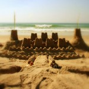
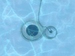
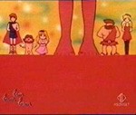
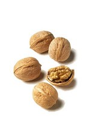
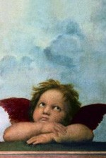
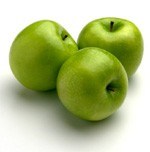

2023

25 marzo 2023Racconti
Terra, anno 2020. Erminio vive a Milano, la sua migliore amica, Jenny, in Australia. Si sono conosciuti quando erano più giovani e frequentavano l’università assieme, e poi sono rimasti in contatto. Erminio e Jenny sono due amici inseparabili, nonostante la…

20 marzo 2023Racconti
Allora, vi racconto questo fatto. L’altro giorno, mi trovato sul pontile di una città costiera, adesso non è importante sapere esattamente quale città fosse, perché ci ero andato a pescare, quando incontro un tizio che mi pare uscito da “Fight Club” di David…

13 marzo 2023Racconti
Ed eccomi qui, seduto sulla panchina di un bel parco, all’ombra degli alberi, immerso nei miei pensieri, quando una foglia decide di atterrare sulla punta del mio naso. Non so cosa abbia pensato la foglia, forse “Ehi, sembra un posto accogliente per…
12 marzo 2023Racconti
Due bambini, Carlo ed Erminio, si trovano seduti in un parco. Carlo è intento a costruire un castello di sabbia, Erminio lo guarda. Improvvisamente, una furiosa raffica di vento arriva e distrugge il castello appena costruito da Carlo. Carlo inizia a…
2009

11 febbraio 2009Umorismo
Fede e religione. Superstizione o reale movimento dell’animo umano? Parlando della fede cristiana, certe persone ricevono le stigmati, le ferite della passione di Gesù. “Forse”, si chiede Elvirio, “perchè sono persone che si immedesimano così fortemente nella…
2008
25 dicembre 2008Umorismo
E' arrivato Natale. Alina sonnecchia nel caldo del suo letto immaginandosi il freddo fuori dalle finestre. Osserva con la sua mente bipolare la dualità degli eventi. La nascita e la morte. La ciclicità delle stagioni, l'andare e il ritornare. Pensa…

5 novembre 2008Senza categoria
Agnese cucinava, assorta nei suoi pensieri, pensava al concetto di solidità. Ragionava sul fatto che, ad esempio, l’illuminazione è come una montagna, solida, da scalare. Si cammina e si cammina con lo sguardo verso l’alto immaginandosi di salire e che tutti…

5 novembre 2008Senza categoria
Non solo essere felici non è un male, ma potresti addirittura rischiare di far stare meglio le persone attorno a te. Happinessultima modifica: 2008-11-05T22:08:24+01:00da agrauwinReposta per primo quest’articolo

5 novembre 2008Umorismo
Amanda ha deciso che è stanca, che è sempre in ritardo e da oggi che è anche a dieta. Finalmente arriva, trafelata, verso le nove di sera a casa del suo ragazzo, non nascondendo la fatica della giornata. Ernesto, che sono un paio d’ore che l’attende per…

5 novembre 2008Umorismo
Gregg Braden dice e scrive nelle sue ricerche, che la realtà non è esterna e scollegata da noi bensì che siamo noi a creare la realtà che ci circonda, con la nostra volontà, conscia o inconscia che sia. Penso che ciò che dice Gregg Braden sia completamente…

22 ottobre 2008Umorismo
Recenti scoperte della fisica quantistica hanno dimostrato che, presa una particella e fatta passare per un foro, questa passa attraverso il foro. Fatta passare attraverso due fori, la stessa passa in entrambe le fessure. Come fà la particella a sapere che ci…
25 settembre 2008Senza categoria
Eustorgio si confida con un amico in merito a certe questioni del cuore, ovvero a come si riesca a capire se il sentimento per la persona amata sia captativo piuttosto che oblativo. Eustorgio credendo che il suo fosse più captativo che oblativo un giorno…
3 settembre 2008Umorismo
Fateci caso perchè è incredibile: le persone parlano… e a volte parlano a noi. Attenzione, dico “a noi” e non “con noi”. Ci raccontano infatti esperienze capitate a loro. La cosa incredibile è che perlopiù ci comportiamo come se stessero parlando “con noi”,…

29 luglio 2008Umorismo
L’estate è perfetta per oziare. A settembre quando le vacanze saranno finite, ci si potrà deprimere con più gusto pensando di averla trascorsa senza aver fatto alcunchè di buono. Estateultima modifica: 2008-07-29T10:35:40+02:00da agrauwinReposta per primo…
11 giugno 2008Umorismo
Da che mondo è mondo, l’uomo ha trovato mille vie di fuga per fuggire dalla triste realtà. Attraverso le droghe come l’oppio, oppure tramite l’oblio del vino, oppure con entrambe simultaneamente. Anche il sonno produce quella necessaria e ristoratrice…
1 giugno 2008Umorismo
La Terra gira intorno al Sole attratto dalla sua forza gravitazionale. Le radici delle piante sono legate alla terra ove possono crescere in tutta tranquillità. I quadri sono appesi alle pareti grazie a dei piccoli chiodi infissi nel muro. I ragazzi fanno…
15 maggio 2008Umorismo
Mi piace un sacco l’aceto balsamico sull’insalata. Così denso e dal profumo invitante. Così graziosamente adagiato sulle verdi foglionine che anche l’occhio ne è appagato. Quelle simpatiche macchioline scure che nascondono molto bene i brutti piccoli insetti.…
15 maggio 2008Umorismo
Il guru seduto a gambe incrociate al centro della stanza parla ai giovani discepoli: “Dio è amore, amore è libertà. Dio vuole che noi diventiamo liberi creatori come lui stesso. Ci fà nascere legati ad un cordone ombelicare, legati a vincoli, leggi e regole,…
15 maggio 2008Umorismo
Sono triste e profondamente demoralizzato, non mi sento più tutelato dalla legge. Nè ovviamente, da questo Stato, ormai capeggiato da vecchi industriali rimbambiti. Fatto stà che oggi mi trovavo in banca e stavo controllando il mio estratto conto.…
14 maggio 2008Umorismo
Emilio è un bambino, è un bambino di sei anni. Ad Emilio piace giocare a palla. Emilio cammina per strada. Vede un sasso, gli dà un calcio. Non era un sasso. Era una merda di cane. Emilio aveva un sogno. Ora quel sogno si è sbriciolato, ed è un pò sulle sue…
11 maggio 2008Umorismo
Empirio è appena morto. Dopo un lungo viaggio attraverso un tunnel nero, scorge una lucina che gli si approssima a forte velocità. La luce è calda e rasserena il suo animo di artista sofferente. Ha avuto una breve ma intensa vita sulla Terra, tanti peccati,…
7 aprile 2008Umorismo
E’ un dato di fatto: i SUV a Milano sono fuori dal loro habitat naturale. Per dare conforto a queste simpatiche creature propongo di portarsi sempre dietro una manciata di semi per piccioni. Alla vista del vostro piccolo SUV indifeso, potrete cospargerlo di…
3 aprile 2008Umorismo
Dialogo tra due tecnici di computer (tutto vero) E- hai visto? oggi il cielo è limpido, niente scie chimiche… S- ma come? ne vedo un paio proprio ora verso sud E- ah, dalla finestra della mia cucina non si vedono, è a nord S- ma tu in cucina non hai finestre…
2 aprile 2008Umorismo
Evidentemente devo essere innamorato: noto tutti i più piccoli particolari, il cielo blu, l’erba verde, il luccichio brillante dell’asfalto. Mi sembra addirittura che il mondo intero sia più buono e propositivo. Puliscono le strade eliminando automobili…
31 marzo 2008Umorismo
Forse non tutti sanno che la vitamina C è antitumorale, prolunga la vita in maniera significativa dei pazienti di cancro in stadio avanzato altrimenti senza speranza. Contrasta gli effetti tossici del fumo di tabacco, dei gas di scarico degli autoveicoli. La…
11 marzo 2008Umorismo
Domanda di Gerris Cotti: “Chi ha scoperto l’america?” Risposte: 1) i nativi americani 2) Crisotforo Colombo 3) Amerigo Vespucci 4) i vichinghi Se avete risposto : 1) Tecnicamente se io nasco a casa mia non posso dire di averla “scoperta”, in quanto ci sono…
9 febbraio 2008Umorismo
Il ragazzo dormiva, nella sua piccola cameretta sognava. Sognava che prendeva un bicchiere di latte e che adagio, con un lento movimento della mano, rovesciava il suo contenuto sul pavimento. Il ragazzo si svegliò, andò in cucina a prepararsi la colazione.…
3 febbraio 2008Umorismo
Ettore pedalava attraverso la campagna. Aveva una fame pazzesca, quella della pausa del mezzogiorno, quando usciva dalla fabbrica per qualche minuto prima di rientrare per il pomeriggio. Dalla sua bicicletta vedeva di lato alla strada alberi di pere, mature.…
30 gennaio 2008Umorismo
Sdraiato su una poltrona verde e con la bocca aperta, Enrico rifletteva come al suo solito. In particolare era concentrato sul concetto di acustica. Aveva capito che è dall’unione che nasce il suono, come nel momento in cui la corda di chitarra viene…
8 gennaio 2008Umorismo
Preferisco le persone taciturne, mi appaiono belle e misteriose. Anche i loro movimenti armoniosi e misurati fanno trasparire la loro modestia. Le poche volte che aprono bocca poi, dicono frasi tipo "oggi fà freddo" o cose simili... così banali che sembrano…
6 gennaio 2008Umorismo
“Per iniziare a vivere nella perfezione dobbiamo anzitutto eliminare i nostri sensi di colpa. Per far ciò è necessario risalire alla loro causa originaria che può, a volte, addirittura essere localizzata in una vita precedente”. Ecco come può essere…
2007
18 dicembre 2007Umorismo
C'è qualcosa di finto nel Natale. Babbo Natale non esiste e nemmeno la Befana. Tutti devono sentirsi più buoni come in una di recita collettiva. Ma chi è che ancora non sà che la Stella Cometa inseguita dei Tre Re Magi non è altro che Sirio? Che il 25…
15 dicembre 2007Umorismo
Era buio e faceva freddo, una classica serata invernale. “Oggi è il giorno perfetto, c’è sempre la prima volta per tutto”. Attraverso la nebbia, un lampione illuminava debolmente la stazione del treno, il treno arrivò. Solo quella ragazza scese dal treno, mi…
22 novembre 2007Umorismo
C’era una volta un giovane uomo che voleva starsene da solo. Egli si disse “ho bisogno di tempo e calma per poter riflettere su me stesso, su chi sono e perchè sono nato. Mi rifugierò in una caverna”. Così fece e trovatola vi si addentrò, convinto di essere…
18 novembre 2007Umorismo
Al caldo e al riparo nella propria casina, Edoardo si imbattè nella parola “solipsismo” e ragionando dovette ammettere che “in fondo è vero, tutto ciò che esiste che vedo e percepisco, è creato dalla mia coscienza. E’ filtrato dai miei sensi e raggiunge…
16 novembre 2007Umorismo
Milioni e milioni di anni fà la Terra era una enorme palla di terra. Mancando le pozze d’acqua nessuno ancora poteva prevedere il futuro. Poi arrivarono le comete e la Terra cominciò a riempirsi d’acqua. L’acqua evaporò e così si creò il cielo. Alcuni germi…

4 luglio 2007Umorismo
Al signor Scarsolini piaceva nuotare in piscina anche se ci andava raramente. Ora che era estate pensava a tutte quelle persone che per fare le vacanze al mare si trovavano imbottigliati sotto il sole degli ingorghi autostradali. Cosicché nuotava ancora più…

4 luglio 2007Umorismo
Le Spugne anche chiamati animali Poriferi, fanno parte del regno dei Parazoi. Sono ermafroditi e praticamente immortali. Se prendete una grattugia e la strofinate accuratamente, i minuscoli pezzetti si ricomporranno nuovamente a formare una nuova massa…

3 luglio 2007Umorismo
Giunone era sposata con Giove, che era suo fratello. Il loro padre, Urano, si mangiò tutti i suoi figli appena nati, compresa Giunone. Giove con del veleno uccise suo padre, facendogli prima vomitare tutti i suoi fratelli. I Ciclopi per premiarlo gli donarono…

3 luglio 2007Umorismo
Aveva deciso di intraprendere la strada verso la perfezione. Iniziò ad evitare i fast food, cheesburger e hamburger doppio bacon. Solo insalate e verdure da oggi in avanti. Mise la pigrizia nell'armadio e si decise ad una attività fisica costante. Mente sana…

2 luglio 2007Umorismo
Osservo i miei occhi nello specchio del bagno, essi mi osservano a loro volta. Immagino che non pensino a niente. Molto spesso osservo il mondo e mi accorgo di avere gli occhi dello specchio, vuoti e alla ricerca di un senso. Allora mi immagino che chi non…
2 luglio 2007Umorismo
Ci sono giorni che non so cosa fare, come oggi. Sto lì come imbambolato davanti al niente. Allora mi sono messo a fare un po’ di meditazione, anche se non ci ho mai provato. Metto della musica tibetana in sottofondo, spengo la luce e accendo una candela. Me…

2 luglio 2007Umorismo
Pedali pedali e ti pare di non andare da nessuna parte. Poi chissacome, un bel giorno smetti di pedalare e per magia ti ritrovi in un mondo sconosciuto tutto da esplorare. Insomma, come una cyclette appena traslocata in una nuova palestra.

23 giugno 2007Umorismo
Il mio gatto è troppo intelligente. Ha dei modi quasi aristocratici. Se mi sdraio rimane a fissarmi per dieci minuti, senza muovere un baffo. Poi mi salta sulla pancia ed inizia a massaggiarla da vero gentleman. Fà tenerezza. Forse crede che uscirà qualcosa…
23 giugno 2007Umorismo
Fischiettavo un pò stonato, pedalando per la strada di campagna. Tornavo a casa, un pò stanco del lavoro giornaliero. Mi precedeva lento un autocarro carico di verdure. Sul manubrio oscillava, attaccato ad un filo di ferro, una bambolina colorata. Che ironica…

22 giugno 2007Umorismo
Pompei. Ore 11:48. E' un venerdì mattina del 79 d.C. La campagna è tranquilla. Gli olivi prendono il sole sul verde pendio ascoltando il canto delle cicale. In lontananza da una parte il mare e dall'altra il Vesuvio che sonnecchia tranquillo. Un contadino…

19 giugno 2007Umorismo
Me ne stavo quatto quatto appartato in un angolo, come sempre. Sapevo che stava tornando. Sentii la serratura della porta girare sotto le mandate della chiave. La porta si aprì ed Aristide entrò nella piccolo cucina. Aveva la faccia stanca, forse aveva…
18 giugno 2007Umorismo
E' necessario imparare a perseverare. Su cento tentativi ce ne sarà almeno uno che funzionerà. [...] Io di solito mi fermo al novantanovesimo.
18 giugno 2007Riflessioni
Abito in periferia di una grande città. Lavoro in centro. Cioè a Milano per essere precisi. Ogni giorno osservo centinaia di auto fare avanti e indietro. E’ come se all’interno di quelle lamiere la gente si trasformasse. Quando sono all’esterno dell’abitacolo…
18 giugno 2007Umorismo
Il Sole, astro dello stesso sistema da cui prende il suo nome, elargiva energia indistintamente a tutti. Essendo al centro di tutto quel girare di pianeti decise un bel giorno, che per lui era sempre lo stesso, di fare qualcosa di diverso. Nonostante potesse…
18 giugno 2007Umorismo
Se è vero che l’universo è in espansione, allora il mio conto corrente dev’essersi teletrasportato in un universo parallelo. Star Trekultima modifica: 2007-06-18T01:10:12+02:00da agrauwinReposta per primo quest’articolo
18 giugno 2007Umorismo
Un picollo sassolino se ne stava disteso sul letto di un torrente. L’acqua fresca e cristallina lo accarezzava incessantemente. Egli pensava tra sè e sè: “Un bel giorno diventerò un enorme sasso, macchè, un gigantesco macigno, cosicchè l’acqua sarà costretta…
18 giugno 2007Umorismo
Un picollo sassolino se ne stava disteso sul letto di un torrente. L'acqua fresca e cristallina lo accarezzava incessantemente. Egli pensava tra sè e sè: "Un bel giorno diventerò un enorme sasso, macchè, un gigantesco macigno, cosicchè l'acqua sarà costretta…
16 giugno 2007Umorismo
Squillarono alla porta. Eleonora andò ad aprire. Il suo amico Domenico entrò senza troppe cerimonie. - We ciao - - Ciao! - - Allora? Tutto bene? - Eleonora per risposta mugugnò qualcosa distrattamente, poi Domenico domandò: - Hai già iniziato il corso di…

16 giugno 2007Racconti
Ci penso e ci medito, ma più lo faccio e più mi rendo conto che questa faccenda non solo ha dell’incredibile, ma che se riuscissi a percepire la realtà ultima di quello che ho visto, non solo diventerei pazzo, probabilmente la mia coscienza si aprirebbe in…
15 giugno 2007Umorismo
- Osserva bene l'uomo - Si, lo stò guardando... - Vedi i piedi? Sono come delle piccole piramidi - Cioè? - La base è più larga per reggere il peso del corpo - Ah, bello. E allora le mani? - Le mani sono come i rami di un albero, rendono vive le cose, le…
15 giugno 2007Umorismo
Nel'antichità si rideva di gusto. Le statue erano tutte senza braccia o senza testa. Imperfette. Oggigiorno l'arte è così sofisticata che come si fa a ridere? Guardi un quadro astratto ed è già tanto se ti viene da vomitare.
15 giugno 2007Umorismo
L'uomo camminava sulla spiaggia. Pensava e rifletteva. Guardava i suoi piedi che lasciavano orme sulla sabbia. Assorto nei suoi pensieri alzò lo sguardo e si imbattè negli occhi di un bambino. Il bambino giocava con una buca a pochi passi dalla riva. L'uomo…
14 giugno 2007Umorismo
Ho mandato giù un cucchiaio amaro, il dottore disse che mi avrebbe guarito. Ma in realtà non è che mi senta poi così meglio. Spero solo che non faccia troppo male quando dovrà uscire...

14 giugno 2007Racconti
Era il tempo delle mele, autunno, e Ottobre era il mese in cui mio padre iniziava a portare a casa cassette di mele. L'unico in famiglia che non ne mangiasse ero io, non so che dirvi, da quando mi persi nel frutteto di mio nonno provai un'avversione…
13 giugno 2007Umorismo
L'uomo è come un libro. E' una copertina colorata su uno scaffale, in attesa di essere letto. Ma l'uomo non ha più tempo per leggere. E' troppo impegnato a costruire altri scaffali.
13 giugno 2007Riflessioni
Le antiche genti credevano che la natura si ribellasse per via di una colpa commessa dal popolo. Come le sette piaghe d'Egitto. Ora è l'uomo che si manda le piaghe da solo. Inquinamento, bombe atomiche, surriscaldamento. La natura non ci parla più, si è…
12 giugno 2007Umorismo
Stava morendo. Il medico gli aveva dato ancora poche settimane. Forse solo giorni. Ma lui rideva. Disteso sul suo letto, rideva e rideva. Nella stanza illuminata dal sole rideva. Un riso bonario, allegro, non triste o di malinconia. Rideva della gioia di…
11 giugno 2007Umorismo
-che noia... dai facciamo così, guardiamoci un bel film di guerra, un pò di action... -si dai, mmmhh... e se invece ti sparassi io direttamente? -uffa! ma mi spieghi perchè la devi mettere sempre sul sentimentale? -così, tanto per vedere cosa succede...…
11 giugno 2007Riflessioni
L’ Arte è la manifestazione dell’intelligenza. Tutto ciò che è manifestazione di intelligenza è dunque Arte. Se si tratta di una Poesia, per semplice che sia, è la manifestazione dell’intelligenza del suo creatore/inventore, del Poeta. Un Poeta che non scriva…
10 giugno 2007Umorismo
Si piantò un cavatappi nel cervello. Girò e girò, aspettandosi che qualcosa, come una bottiglia di vino, uscisse da qualche parte. Tipo delle idee, dei pensieri, invece bussarono alla finestra. Il Re Pinguino si presentò. -Sono il Re dell'Inferno. Sono venuto…

10 giugno 2007Racconti
-Vedi Celsius, l'universo è semplice da capire... Prese una cartuccia e la infilò nel caricatore, il fucile era pronto. - Come dici? - Dico l'universo... sai, il sole, la terra... è come diceva Fourier - Chi?! Imbracciò il fucile e puntò verso il bosco,…
9 giugno 2007Blog tips tricks
“E’ meglio fare una cosa sbagliata piuttosto che non fare niente” <PRATICA> >> DARE ovvero scrivere 1) i TAG Inserire i Tag nei post che scriviamo è fondamentale. Anche un solo Tag è sufficiente, non metterne nessuno diminuisce del 99% che qualcuno mai…
8 giugno 2007Riflessioni
E’ errato pensare che se non ci sia niente da scrivere non valga comunque la pena di farlo. Il vero scrittore sà comunicare qualsiasi stato d’animo, facendo incuriosire il lettore. Facendolo divertire. E in generale infondendo fiducia in qualsiasi persona a…
8 giugno 2007Umorismo
Ho trovato l'equilibrio nella mia vita. Finalmente riesco a dedicare 8 ore al lavoro, 8 ore allo svago e 8 ore per riposare. In realtà la cosa mi inquieta parecchio. Su Mercurio un giorno, cioè una rotazione su sè stesso dura 58 giorni, vi immaginate che…
8 giugno 2007Umorismo
Un libro non lo si misura per la qualità di parole scritte, o per il loro significato. Si calcola moltiplicando base per altezza per profondità. Per trovarne il volume.
8 giugno 2007Umorismo
In mezzo a scaffali di stoffe, panni colorati, rotoli di spago e spilli, il sarto pensava tra sé "…il buon senso non è forse anch'esso un giusto misurare le parole e i gesti?", allungò una mano distrattamente e trovò la forbice. Ogni distanza era memorizzata…
7 giugno 2007Riflessioni
Generalmente quando un motivo di discussione è particolare, il soggetto da opinare viene presentato subito. Addirittura nel titolo stesso. Invece un articolo che ha come ragione un discorso universale, ha un inizio più rallentato, essendone la causa,…
6 giugno 2007Umorismo
Nell’azzurro del cielo, la tranquillità del vento. Un Angelo osservava sotto le nuvole, assorto nel pensiero dell’eternità a cui era destinato. – chissà… forse i demoni non si fanno queste domande…. e si divertono di più… L’ Angelo rimase pensieroso per…
6 giugno 2007Umorismo
Nell'azzurro del cielo, la tranquillità del vento. Un Angelo osservava sotto le nuvole, assorto nel pensiero dell'eternità a cui era destinato. - chissà... forse i demoni non si fanno queste domande.... e si divertono di più... L' Angelo rimase pensieroso per…
6 giugno 2007Umorismo
La cosa bella dei libri è che dopo un pò finiscono. E per fortuna nessuno ti obbliga nemmeno ad iniziarli. Libroultima modifica: 2007-06-06T16:10:00+02:00da agrauwinReposta per primo quest’articolo
6 giugno 2007Umorismo
La cosa bella dei libri è che dopo un pò finiscono. E per fortuna nessuno ti obbliga nemmeno ad iniziarli.
6 giugno 2007Umorismo
La Piramide di Cheope osserva, una preghiera rivolta alle stelle… Blocchi enormi di pietra, sfida il deserto. Immobile, si fà beffe delle intemperie. E dal basso Zahi Hawass la protegge dall’indifferenza umana. -Dannazione! Eppure i calcoli erano giusti, il…
5 giugno 2007Umorismo
- sono uscito dal tunnel di woody allen - cioè? - bhè sai, dopo 2 mesi a guardare tutti i suoi film... - ah! bene... e come hai fatto? - eh... bhè, sono entrato in quello dell'alcolismo
5 giugno 2007Umorismo
- io sono un pirla... - e perchè? - ...così, tanto per darmi delle arie...
5 giugno 2007Poesie
Ama la Vita! Così perversa, ammaliante, e tuttavia calma e incurante. Ti prende il cuore, te lo sfracella un attimo, ma il tempo di un respiro e quello riprende a palpitare, manco fosse fatto di semplici atomi o molecole. Quanta tristezza negli occhi di un…

3 giugno 2007Racconti
La casa era piccola, fatta di pietre, aveva due piani, c'era inoltre la soffitta che dalla finestra rotonda si poteva vedere il paesaggio lì intorno. Tanti piccoli sassi per terra, dal cortiletto scendevano verso il paese e facevano quella che chiamavano "la…

31 maggio 2007Riflessioni
Per capire la vita è necessario essere filosofi, studiare filosofia è indispensabile. Questo almeno inizialmente, poi ti accorgi che ha a che fare di più con la psicologia, e studi quella. Ma è tutto così robotico. Coma la biologia, causa ed effetto. Invece…

31 maggio 2007Racconti
E poi c'é il mare. Oggi é poco mosso, l'onda più alta non ha superato il metro d'altezza. Comunque é tutto un movimento. Le onde si rincorrono a una a una e si richiamano gridando. Un'onda s'innalza, sembra fermarsi, s'increspa, s'imbianca e poi s'abbatte…
30 maggio 2007Umorismo
In questi giorni mi sento un pò così, euforico, oserei dire quasi in stato di estasti. Cioè… insomma sì, più mi osservo e più mi rendo conto che mi trovo in quella fase della vita in cui nessuno riesce davvero ad ispirarmi. A parte i lottatori di Wrestling,…
29 maggio 2007Riflessioni
A me piace scrivere così, in maniera infantile. Da Schopenhauer ho imparato che il maggior elogio per uno scrittore è quello di sentirsi chiamare “ingenuo”. Questa parola sottolinea, infatti, che egli può mostrarsi così com’è e di solito l’ingenuità riesce…
29 maggio 2007Riflessioni
Il mistero! Che grande potere di suggestione. Se sapessimo tutto della nostra vita che gusto ci sarebbe? Come per esempio gli oroscopi, ma dico io, se non ci fossero, che cosa resterebbe di intelligente nei giornali? Niente! Tutto quello che c’è scritto è lì…
28 maggio 2007Riflessioni
Sono meteoropatico, cioè mi faccio influenzare dal tempo, cioè se piove o nevica o grandina. Oggi piove e l'intuito mi dice che qualcosa di brutto capiterà a breve. Sto aspettando una lettera. Dovrebbe essere arrivata stamattina. Potrei uscire e andare a…

28 maggio 2007Racconti
Ero adagiato mollemente sul banco di scuola, come un vecchio sacco di patate dimenticato da tutti; ordinati, altri sacchi erano davanti e affianco a me. Non so se erano attenti alla lezione o se semplicemente ricopiavano quello che veniva scritto alla…
27 maggio 2007Riflessioni
La Vita è fallimentare per sua definizione, se qualcosa ti sorride è solo una tua illusione. Sulla home page di Google, di fianco a "Cerca con Google" sarebbe più realistico metterci "Mi sento sfortunato".
27 maggio 2007Riflessioni
Nel piacere dell’apprendere, ci si concede un rilassamento cerebrale, causato dal processo mentale che si presta ponendo l’attenzione al soggetto della nostra lettura. Se questo piacere si interrompre bruscamente verso il basso, a causa di un artificio…
26 maggio 2007Umorismo
La cosa migliore per svegliarti di mattina sono le mele, non il caffè… bhè, anche le pere funzionano benissimo… soprattutto per i maschietti… cosa? e per le femminuccie? bhè, non saprei… direi che le mele vanno benissimo… e… e ricordate di tenere le perle…
26 maggio 2007Umorismo
Roarrr, sgrunf sgrunf... cosa? ah sì, bhè allora, i leoni si accoppiano anche fino a 50 volte al giorno, eh... bhè insomma... invece i maiali hanno un orgasmo che dura 30 minuti... e, certo... mi spiace molto, davvero, per voi, ma insomma... per questa volta…

26 maggio 2007Poesie
Ahhh! Mi colse ancor più forte la disperazione mentre stavo saltellando con un solo piede, ed è già molto che, ruzzolando sui gradini di granito mi ritrovi ancora in buono stato. Ma perchè questa frenesia? C’è nell’aria una qualche malattia, che vi devo dire,…
26 maggio 2007Riflessioni
Nel piacere dell'apprendere, ci si concede un rilassamento cerebrale, causato dal processo mentale che si presta ponendo l'attenzione al soggetto della nostra lettura. Se questo piacere si interrompre bruscamente verso il basso, a causa di un artificio…
23 maggio 2007Riflessioni
Mi ritrovo stupefatto, a scrivere queste quattro righe. Meravigliato più di quanto, sono sicuro, vi stiate meravigliando voi stessi. Se non fossi così abile a giocare con le parole di sicuro non scriverei, poiché proprio mi diletta questo mio scrivere. Oh!…

23 maggio 2007Racconti
L'amore finisce, è la frase più triste che si possa concepire. Me lo disse una anziana signora sui settanta e passa anni lungo via degli Archibugi, proprio di fianco al ferramenta e di fronte al fioraio "Evergreen". Sul momento non ci feci caso, le due…
21 maggio 2007Riflessioni
Anima triste e solitaria. Ehi! ma io non sono né triste, né solitaria. Quindi? Quindi c'è troppo traffico e ciò mi rende un po’ nervoso. Si sta così bene in montagna, peccato che poi bisogna tornare al tram-tram quotidiano e fare i soliti chilometri in mezzo…

18 maggio 2007Libri
Pubblicare un libro, la prima volta è sempre la prima volta. Di solito è quella peggiore, poi con l’esperienza si migliora. Mio fratello mi ha mandato un link di una casa editrice, perchè diciamocelo, il problema è sempre lo stesso. La mancanza di denaro. Una…

17 maggio 2007Racconti
Sono ormai tre giorni che fuggo dai Turlok. Solo di giorno, però, perché la notte i Turlok fanno pausa, così per non affaticarmi troppo, faccio pausa anch’io. Il movimento, soprattutto a piedi, in questa landa arida ed erosa dai venti, è pressoché…
16 maggio 2007Amore
Anzitutto è un problema di linguaggio. Capire cosa sia “anima” e cosa sia “gemella” probabilmente potrebbe aiutavi molto. Anche se “molto” non è esattamente l’obiettivo che vi siete prefissati o prefissi. E poi che ve ne fate di un’anima gemella? Anima…
15 maggio 2007Riflessioni
Ci si innamora sempre delle belle ragazze, o dei bei ragazzi, dipende dal punto di vista. Ma il bello allora è così oggettivo? Si impara sempre dai migliori, quindi il migliore stà in relazione alla stima che abbiamo di noi stessi. L'incontro amoroso è un…